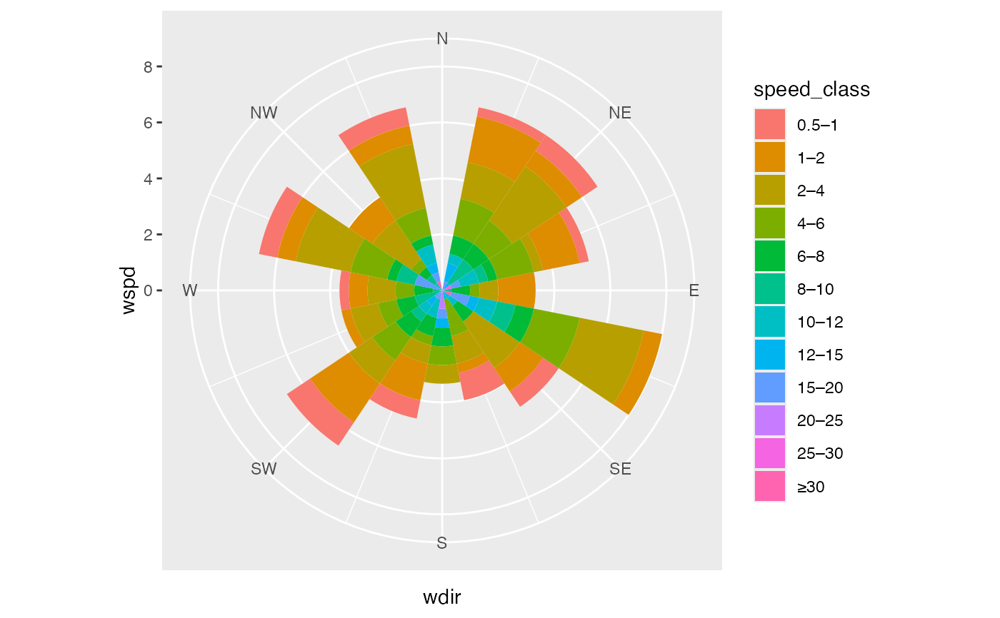

Bins wind direction (x) and speed (y) into a direction-by-speed
frequency table. Calm winds (speed \(\le\) calm_threshold) are
excluded from the bars but kept in the denominator.
Usage
stat_windrose(
mapping = NULL,
data = NULL,
geom = "col",
position = "stack",
...,
n_dir = 16,
speed_breaks = NULL,
speed_labels = NULL,
calm_threshold = 0.5,
na.rm = FALSE,
show.legend = NA,
inherit.aes = TRUE
)Arguments
- mapping
Set of aesthetic mappings. At minimum:
aes(x = wdir, y = wspd).filldefaults toafter_stat(speed_class)unless overridden.- data
A data frame.
NULLinherits fromggplot().- geom
Geom to use. Default
"col".- position
Position adjustment. Default
"stack".- ...
Extra parameters passed to
GeomWindroseorStatWindrose.- n_dir
Number of direction sectors. Default
16(22.5°). Use8for 45° sectors.- speed_breaks
Numeric vector of speed bin edges, or
NULLfor the default meteorological progression:c(0.5, 1, 2, 4, 6, 8, 10, …, Inf). The last element may beInffor an open-ended bin.- speed_labels
Character vector of bin labels, length
length(speed_breaks) - 1. Auto-generated whenNULL.- calm_threshold
Observations with speed \(\le\) this value are treated as calm. Default
0.5.- na.rm
Drop
NAvalues silently? DefaultFALSE.- show.legend
Logical;
NAincludes in legend if mapped.- inherit.aes
Inherit aesthetics from
ggplot()? DefaultTRUE.
Details
This stat is used internally by geom_windrose(). Use stat_windrose()
directly only when you need a non-default geom.
Computed variables
after_stat(y)Frequency as % of all observations (incl. calm).
after_stat(speed_class)Ordered factor of speed bin labels.
after_stat(calm_pct)Calm percentage, constant across the panel.
Examples
library(ggplot2)
set.seed(1)
df <- data.frame(wdir = sample(0:359, 300, replace = TRUE),
wspd = c(rep(0, 20), rexp(280, 0.2)))
# Access calm_pct via after_stat()
ggplot(df, aes(x = wdir, y = wspd)) +
stat_windrose(aes(fill = after_stat(speed_class)), width = 22.5) +
coord_windrose() +
scale_x_windrose()
#> Warning: Removed 5 rows containing missing values or values outside the scale range
#> (`geom_col()`).
